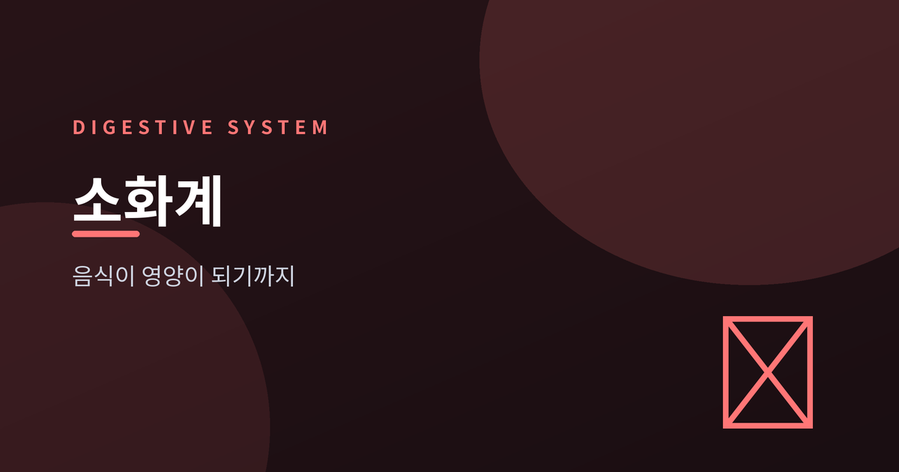
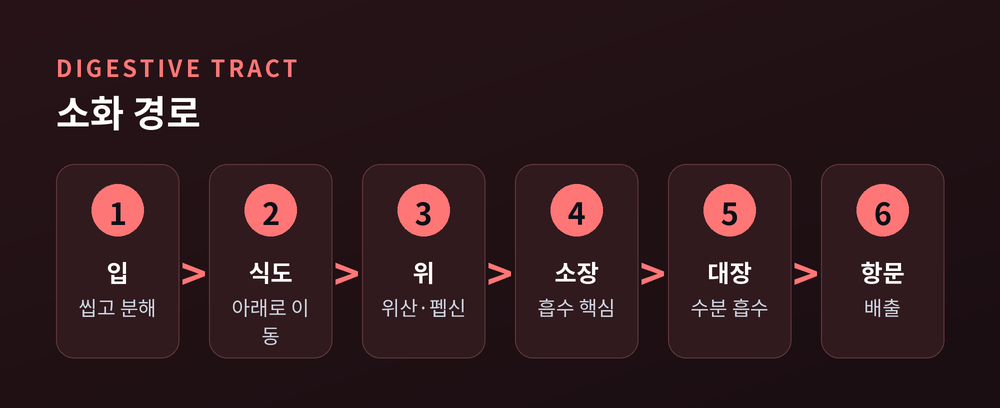
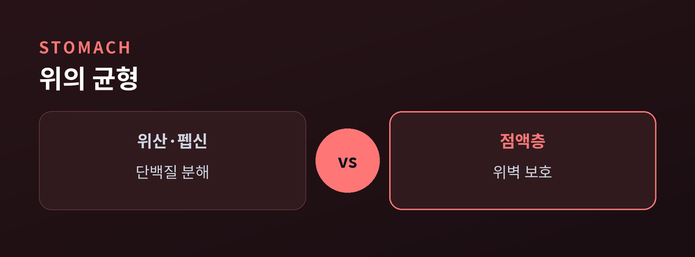
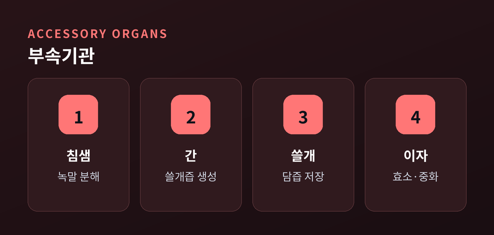
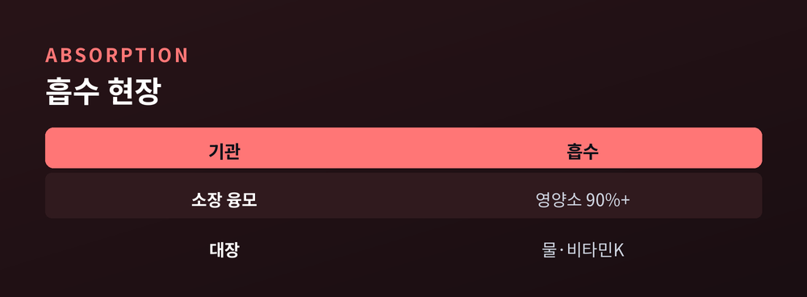

음식이 영양이 되기까지의 여정

한 끼의 밥은 삼키는 순간부터 긴 여정을 시작합니다.
오늘은 그 음식이 어떻게 잘게 나뉘고, 영양이 되어 몸에 스며드는지 차근차근 따라가 보려 합니다.
소화는 음식을 몸이 흡수할 만큼 작게 쪼개는 일입니다.
크게 두 갈래로 나뉩니다.
하나는 기계적 소화입니다. 이로 씹고 근육으로 섞어, 물리적으로 부수는 과정이지요.
다른 하나는 화학적 소화입니다. 소화효소가 큰 분자를 잘게 끊어냅니다.
씹는 그 순간, 침 속 효소가 벌써 녹말을 분해하기 시작합니다.

소화관은 입에서 식도, 위, 소장, 대장을 거쳐 항문으로 이어집니다.
전체 길이는 약 9m로 알려져 있습니다.
입은 음식을 씹고, 식도는 꿈틀 운동으로 아래로 내려보냅니다.
위는 위산과 펩신으로 단백질을 풀고, 음식을 죽처럼 만듭니다.
자기 위산에 상하지 않도록, 위벽은 점액으로 스스로를 지킵니다.
음식이 위와 소장을 지나는 데만 평균 6시간이 걸립니다.

간과 쓸개, 이자, 침샘은 음식이 직접 지나지 않습니다.
대신 소화액을 보태며 뒤에서 돕는 셈입니다.
간은 쓸개즙을 만들고, 쓸개는 그것을 모았다가 필요할 때 내보냅니다.
쓸개즙은 효소가 아닙니다. 지방을 잘게 흩어놓는 유화제입니다.
이자는 위산을 중화하고, 탄수화물·단백질·지방을 모두 분해합니다.

소장 안쪽에는 융모라는 작은 돌기가 촘촘히 돋아 있습니다.
덕분에 흡수 표면적이 약 40배, 미세융모까지 더하면 수백 배로 넓어집니다.
탄수화물과 단백질의 대부분, 물의 90% 이상이 이곳에서 흡수됩니다.
대장은 남은 물을 마저 거두고, 그 안의 미생물이 비타민 K를 만듭니다.
흔한 오해와 달리, 속쓰림은 위산이 많아서만 생기지 않습니다.
식도 아래 괄약근이 헐거워져 위산이 거꾸로 올라올 때 나타나는 것입니다.

정리하면 이렇습니다.
한 끼가 영양이 되기까지는, 부수고 녹이고 흡수하는 며칠간의 협업이 필요합니다.
예전엔 음식이 배 속에서 그저 사라진다고 여겼습니다. 지금은 그것이 정교한 공정임을 압니다.
"소화는 몸이 매일 조용히 돌리는 화학 공장입니다."
오늘 삼킨 한 끼가 지금 어디쯤 지나고 있을지, 한 번 떠올려 보시면 어떨까요.
참고 소스